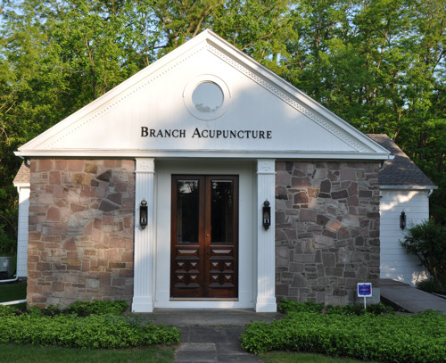

Whatever your health goals may be, acupuncture and Traditional Chinese Medicine can help you achieve them. Our holistic approach actually dates back thousands of years - it integrates nutrition, physical health, and many therapies to bring your body into balance.
Read MoreAs human beings, we are unique bioenergetic systems - and part of a vital life force that flows through all things. In Oriental Medicine, this is called Qi ("chee"); in the West, we call it energy. Your energy (Qi) flows along pathways in your body that are related to your organs and tendo-muscular system.
When the balance of your energy is disturbed, you can experience pain or illness. It may be due to trauma, poor diet, medications, stress, hereditary conditions, environmental factors, or emotional issues.
Oriental Medicine focuses on correcting these energetic imbalances by breaking up obstructions and encouraging an even flow of Qi, which stimulates your body's natural ability to heal itself.
Acupuncture involves the strategic placement of tiny needles into a pattern that spans your body, from head to toe. We use these painless needles to stimulate specific energy points. During your session, we may also use techniques such as moxabustion (heat), gua sha (scraping), cupping (suction), auricular therapy (ear acupuncture), electrical or laser stimulation, or even manual stimulation of the points.
Acupuncture has been proven as an effective treatment for hundreds of acute and chronic ailments. It can help relieve pain, enhance your body's recuperative powers, and strengthen your immune system. Some specific areas of treatment at Branch Acupuncture include:
The practice of Oriental Medicine encourages the use of safe, effective, and natural approaches to health care - and that includes nutritional supplements and lifestyle medicines. At Branch Acupuncture, we carry only proven, top-of-the-line brands (e.g., Metagenics) for our lines of vitamins and supplements.
We've found that ancient Chinese herbal formulas are as effective now as they were when first introduced thousands of years ago. Most of these formulas consist of two to 18 different types of herbs. They treat a wide variety of symptoms while stimulating your body's natural healing process.
Studies show that these herbal formulas have excellent results, especially in people who fail to respond to conventional pharmaceutical treatments.
Our herbs can be used with or without acupuncture to treat many conditions and enhance your overall well-being. High-quality, custom prescriptions are prepared and available in raw form, or in many cases, as tea bags, powders, or capsules.
At Branch Acupuncture, our unique approach starts with your story. What brought you here? Which health issues do you need to address? What are your current lifestyle and diet like? Then we put together a customized plan to put you on the right path.
Your plan may include nutritional recommendations and acupuncture therapy, all designed to enhance your spiritual, mental, emotional, and physical well-being.
Branch Acupuncture started in a one-room office in Rochester. We soon expanded to a Brighton location, and most recently, we've relocated to a beautiful, historic chapel in the Bushnell's Basin area. Our new location has been completely renovated to accommodate our practice

Clients find the new space relaxing, peaceful, and convenient - of course, there's free parking.
Branch Acupuncture is run by Molly Branch. Molly was born and grew up in the Rochester area. She holds a B.A. from St. Bonaventure University and a Master of Professional Studies in Community Services Administration from Alfred University. She worked in healthcare administration before pursuing her career as an acupuncturist.
Molly received her second graduate degree, a Masters of Acupuncture and Chinese Herbal Medicine, from the New England School of Acupuncture in Boston, Massachusetts. The four-year program included a clinical practice and a core curriculum in Western sciences and biomedicine. This background helps Molly to assess each patient's medical needs before beginning treatment.
Molly is licensed as an Acupuncturist by the New York State Educational Department, Office of the Professions. She is also licensed in Massachusetts and Vermont. She is certified by the National Certification Commission for Acupuncture and Oriental Medicine (NCCAOM) with a Diploma in Acupuncture.
In recent years, Molly has studied..., (Need to fill in here - infertility and cancer treatments ...)
During an acupuncture treatment, extremely fine, hair-thin, flexible needles are placed at specific points on your body's energetic pathways, known as meridians.
When the needles are inserted, you may experience a sensation of tingling or warmth. People are surprised to find that treatments are actually quite relaxing.
The length and frequency of a treatment may vary for each individual. As your condition improves, fewer visits are required.
No - acupuncture and Chinese herbology are safe medical procedures that are well-known for their efficacy and lack of side effects when administered by a qualified practitioner.
At Branch Acupuncture, we use only pre-sterilized, disposable needles when administering an acupuncture treatment.
The following are just some of the most commonly treated conditions. Many other conditions are treated as well - and remember, during periods of wellness, acupuncture is an effective preventative treatment!
Depending on the number and length of sessions you need, your costs may vary. Each one-hour session typically costs XXX. (MOLLY - not sure if you want to include this information, but I thought I'd put it in here just in case)
(NOTE: I suggest changing your email on the site to something like Molly@mollybranch.com or info@mollybranch.com - the Yahoo domain and "dragon" moniker sound too personal, IMHO)
(I'm thinking you don't want to post actual hours, but if you do, that would be good - I just know people will want that info on this page, so I thought I'd add it.)